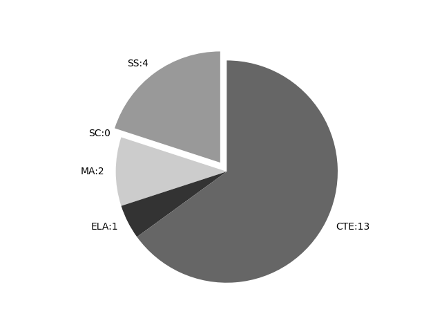

Connecticut
Report date: 2021-07-08
The frequency of all keywords found in this state's standards: 20
Comparable state score: 0.209 (median: .303, SD: .324)
The frequency above is the sum of all keywords found in all of this state's four core academic standards and the state's CTE/career standards. This total count is broken down by keyword and discipline area below.
On this site, 'comparable scores' are calculated as: keywords found divided by total words in the standards document(s) - multiplied by 100,000. The comparable scores attempt to normalize data, accounting for very different sizes of curriculum guidance documentation.
Frequencies by keyword or phrase:- spatial: 9
- Geographic Information System: 3
- geospatial: 5
- GIS: 3

Frequencies by discipline area: - SS: 4
(Comp: 0.707) - SC: 0
(Comp: 0.0) - MA: 2
(Comp: 0.156) - ELA: 1
(Comp: 0.191) - CTE: 13
(Comp: 0.195)
Review the standards document(s) used in this machine search: external link
Examples of keyword use by discipline area (and document): - CTE
- techEd_CCTC_Standards_Formatted_2014.pdf, page:4, position:1392
maintain AFNR mechanical equipment and power systems. 3. Service and repair AFNR mechanical equipment and power systems. 4. Plan, build and maintain AFNR structures.5. Use control, monitoring, geospatial and other technologies in AFNR power, structural - ConnecticutEditionAFNR-Frameworks.pdf, page:33, position:977
and describe different types of geographic data used in AFNR systems. CS.02.01.01.b. Analyze and interpret AFNR related geographic data using a variety of systems and technologies (e.g., GIS, GPS, etc.). CS.02.01.01.c. Evaluate geograph - ConnecticutEditionAFNR-Frameworks.pdf, page:87, position:3636
TO OTHER PATHWAYS: For additional content frameworks on energy, see Natural Resource Systems NRS.02 and NRS.03. For additional content frameworks on precision technology, specifically Geographic Information Systems, see Natural Resource Systems NRS.03. For addit - ConnecticutEditionAFNR-Frameworks.pdf, page:95, position:1771
and cartographic skills to make site measurements in order to address concerns and needs within an environmental service systems situation. ESS.05.01.02.a. Research the methods in which GIS can be used in environmental service systems (e. - ConnecticutEditionAFNR-Frameworks.pdf, page:112, position:3890
additional content frameworks on the topic of climate change, see Environmental Service Systems ESS.03. For additional content frameworks on the topic of precision technologies, specifically Geographic Information Systems, see Environmental Service Systems ESS.05. For - ConnecticutEditionAFNR-Frameworks.pdf, page:120, position:2274
Take a hike using a topographic map. NRS.03.03.03.a. Describe basic applications of global positioning systems in natural resources. NRS.03.03.03.b. Analyze an area™s resources using GIS technologies. NRS.03.03.03.c. Use GIS data for - ConnecticutEditionAFNR-Frameworks.pdf, page:138, position:3631
of each level of proficiency based upon local CTE program structures. CONNECTIONS TO OTHER PATHWAYS: For additional content frameworks on the topic of precision technologies, specifically Geographic Information Systems, see Environmental Service Systems ESS.05 and N - ConnecticutEditionAFNR-Frameworks.pdf, page:144, position:2362
an electrical motor. PST.04.04.02.c. Plan and wire electrical circuits (i.e., single pole switch, three-way switch, duplex outlet, etc.). PST.05. CCTC Framework: Use control, monitoring, geospatial and other technologies in AFNR power, structural - ConnecticutEditionAFNR-Frameworks.pdf, page:145, position:2902
knowledge and skills related to the above performance indicator. The topics represented by each strand are not all-encompassing. PST.05.03.01.a. Research and summarize the impact of utilizing geospatial technologies (i.e., GPS, GIS, remote sensing, - ConnecticutEditionAFNR-Frameworks.pdf, page:210, position:1366
andor layout, plumbing, concretemasonry, etc.). PST.04.04. Performance Indicator: Apply electrical wiring principles in AFNR structures. NGSS HS-PS3-5PST.05. CCTC : Use control, monitoring, geospatial and other technologies in AFNR power, structural - ConnecticutEditionAFNR-Frameworks.pdf, page:211, position:277
Performance Indicator: Prepare andor use electrical drawings to design, install and troubleshoot electronic control systems in AFNR settings. PST.05.03. Performance Indicator: Apply geospatial technologies to solve problems and increase the e - manufacturing.pdf, page:92, position:2767
steam engine.E.The design and construction ofstructures for service or conven-ience have evolved from thedevelopment of techniques formeasurement, controlling systems,and the understanding of spatialrelationships.For example, thepurpose of Roman - manufacturing.pdf, page:202, position:1294
and enable goods to be movedfrom place to place.Students should have the opportunity todesign and build models of structures. Thisprocess can provide a meaningful way forthem to develop spatial relationships. Theyalso should begin to recogniz
- ELA
- ADA_CC_ELAStandards.pdf, page:27, position:4345
to better understand each of the words.6.Acquire and use accurately grade-appropriate conversational, general academic, and domain- speciÞc words and phrases, including those that signal spatial and temporal relationships (e.g., After dinner
- MA
- ADA_CC_MathStandards.pdf, page:1, position:565
greater focus and coherenceMathematics experiences in early childhood settings should concentrate on(1) number (which includes whole number, operations, and relations) and (2) geometry, spatial relations, and measurement, with more mathema - ADA_CC_MathStandards.pdf, page:8, position:309
combined sets, or counting the number of objects that remain in a set after some are taken away.Students describe their physical world using geometric ideas (e.g., shape, orientation, spatial relations) and vocabulary. They identify, nam
- SS
- ssframeworks.pdf, page:103, position:28
- ssframeworks.pdf, page:113, position:95
What are th - ssframeworks.pdf, page:125, position:234
and environmental characteristics.GEO 9Œ12.2 the locations of places and regions and their political, cultural, and economic dynamics.GEO 9Œ12.3 Use geographic data to analyze variations in the spatial patterns of cultural and environmental char-acte - ssframeworks.pdf, page:126, position:78
{kind=link}